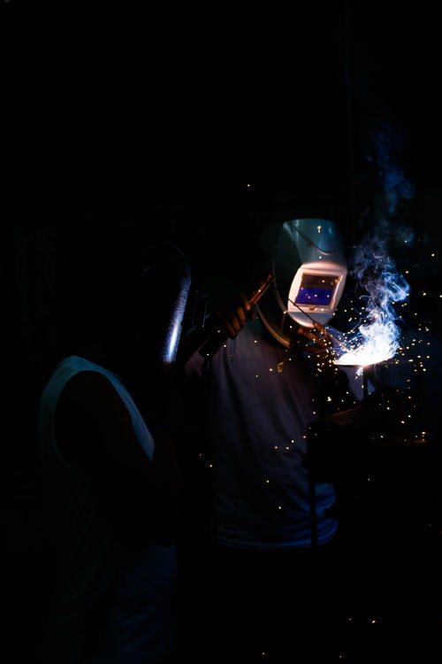

an application that provides users with the ability to reach out to operations or repairs department regarding repair or
maintenance requests and monitor the status of their request.
You make the request, watch us do the rest

×
About MnR Tracker
MnR Tracker is a web app created by Melvin
It was created in the year 2018, with the aim
of making Maintenance and Repair of different parts of any company
easier and faster
×
Services offered by MnR Tracker
Maintenance Tracker App is an application that provides users with the ability to
reach out to operations or repairs department regarding repair or maintenance requests
and monitor the status of their request.